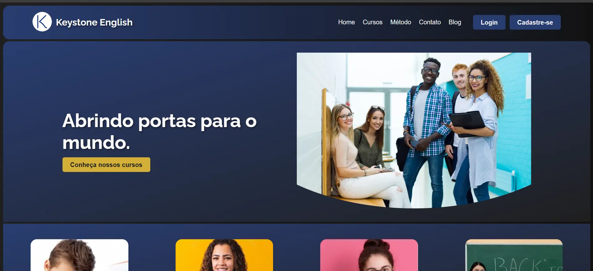

Case Study: Keystone English - Desenvolvendo um Site Interativo para o Aprendizado de Inglês
Visão Geral do Projeto (Overview)
O Keystone English é um projeto de site desenvolvido como trabalho de conclusão de curso e porta de entrada para o mercado de trabalho, com o objetivo de ser uma plataforma online para uma escola fictícia de inglês apresentar seus cursos, sua metodologia de ensino e sua equipe de professores. O site serve como um ponto central de informações para potenciais alunos interessados em aprender inglês, facilitando o contato direto com a escola e oferecendo uma experiência interativa através de um blog com publicações sobre o ensino de idiomas. Meu papel no projeto foi de desenvolvedor full-stack, sendo responsável por todo o planejamento, design, desenvolvimento, e implantação do site. O desenvolvimento durou 3 meses, dividido em 6 sprints de 2 semanas, sendo 2 meses em desenvolvimento e 1 mês em produção.
Link para o site: https://keystone-english-frontend.onrender.com
Desafio (Challenge)
O principal desafio era criar um site fluido, atraente e responsivo que proporcionasse um meio de interação entre a escola fictícia e os usuários. O site precisava ser fácil de navegar, com informações claras sobre os cursos e a metodologia de ensino, além de incentivar o contato de potenciais alunos interessados em se matricular.
Além dos desafios de design e usabilidade, também enfrentei desafios técnicos, como:
- Desenvolver um blog dinâmico: O site precisava de um blog com um sistema de cadastro e login, onde os administradores pudessem criar, editar e excluir publicações, e os usuários pudessem interagir através de comentários. Isso exigiu a criação de APIs para lidar com as operações de CRUD (Create, Read, Update, Delete) no banco de dados.
- Criar APIs personalizadas: Foi necessário desenvolver minhas próprias APIs para me comunicar com o banco de dados e gerenciar as requisições do front-end.
- Implementar um formulário de contato inteligente: Para incentivar o contato e otimizar o processo de matrícula, o site precisava de um formulário que pré-preenchesse os campos de nome e e-mail para usuários logados, e também preenchesse os campos "assunto" e "mensagem" quando acessado através do link de matrícula na página de detalhes de um curso.
- Gerenciar o upload de imagens: O site precisava de uma solução para que os administradores pudessem fazer upload de imagens para ilustrar as publicações do blog. Inicialmente, o método usado para upload de imagens só funcionava localmente e precisou ser adaptado para funcionar em produção.
- Realizar a implantação (deploy) do site: Todo o processo de colocar o site em produção e configurá-lo em um servidor web foi um desafio novo e empolgante.
Solução (Solution)
Para superar os desafios e atingir os objetivos do projeto, tomei as seguintes decisões:
-
Design e Usabilidade:
- Optei por criar todo o CSS do zero, sem utilizar frameworks ou templates prontos. Essa abordagem, embora mais trabalhosa, me deu total controle sobre o visual do site e foi um ótimo exercício para aprimorar minhas habilidades em CSS. O design foi pensado para ser minimalista, intuitivo e responsivo, adaptando-se a diferentes tamanhos de tela.
- A navegação foi projetada para ser simples e direta, com um header reutilizável que facilita o acesso às diferentes seções do site.
-
Desenvolvimento do Blog:
- O blog foi a última funcionalidade a ser implementada e uma das mais complexas. Ele foi desenvolvido usando o sistema de roteamento do Angular e componentes dedicados para a listagem, visualização, criação, edição e exclusão de posts. As APIs para o blog foram as mais complexas, lidando com todas as operações de CRUD, autenticação de usuários, gerenciamento de sessões, além de um sistema de moderação de comentários.
- O sistema de login e cadastro foi implementado utilizando JWT (JSON Web Tokens) para autenticação e bcrypt para criptografar as senhas dos usuários.
-
Formulário de Contato Inteligente:
- O formulário de contato foi integrado de forma inteligente com o restante do site. Para usuários logados, os campos de nome e e-mail são preenchidos automaticamente com os dados do seu perfil. Além disso, quando o formulário é acessado através do link "Matricule-se" na página de um curso específico, os campos "assunto" e "mensagem" são preenchidos automaticamente com informações relevantes sobre o curso, agilizando o processo para o usuário e incentivando a conversão. Essa funcionalidade foi implementada utilizando o `ActivatedRoute` do Angular para capturar os parâmetros da URL e o `localStorage` para armazenar os dados do usuário logado.
-
Tecnologias:
-
Front-end:
- Angular: Escolhi o Angular por ser um framework robusto e por já ter experiência prévia com ele, adquirida em um curso recente. Além disso, meu interesse em aprender TypeScript me motivou a aprofundar meus conhecimentos em Angular, que é baseado nessa linguagem. Acredito que o Angular foi uma escolha acertada, pois me permitiu criar uma aplicação web bem estruturada, organizada em componentes reutilizáveis e com um código mais limpo e fácil de manter, além de me forçar a colocar em prática os conhecimentos adquiridos no curso.
- TypeScript: O uso do TypeScript, um superset do JavaScript que adiciona tipagem estática ao código, contribuiu para a qualidade e a manutenibilidade do projeto, tornando o código mais seguro, legível e fácil de debugar.
- HTML e CSS: Utilizei HTML semântico para estruturar o conteúdo do site e CSS para estilizar e criar o layout responsivo.
-
Back-end:
- Node.js com Express: Node.js foi escolhido por ser uma plataforma eficiente e escalável para a criação de APIs RESTful. O Express.js, um framework minimalista e flexível para Node.js, foi utilizado para simplificar o desenvolvimento das APIs, o gerenciamento de rotas e a comunicação com o banco de dados. A familiaridade com JavaScript tornou a escolha por Node.js natural, permitindo um desenvolvimento full-stack mais coeso.
- APIs RESTful: As APIs foram projetadas seguindo os princípios REST, utilizando os verbos HTTP (GET, POST, PUT, DELETE) para as diferentes operações e retornando respostas em formato JSON.
-
Banco de Dados:
- MongoDB: Optei pelo MongoDB, um banco de dados NoSQL orientado a documentos, devido à sua flexibilidade e escalabilidade. A estrutura flexível do MongoDB, que não exige um esquema rígido como os bancos relacionais, permitiu que eu experimentasse mais com os modelos de dados durante o desenvolvimento e me adaptasse facilmente às mudanças nos requisitos do projeto. Além disso, a facilidade de integração do MongoDB com o Node.js e a familiaridade com a sintaxe de consultas, semelhante ao JavaScript, contribuíram para a escolha.
-
APIs e Serviços Externos:
- Nodemailer: Para o envio de e-mails através do formulário de contato, utilizei o Nodemailer, uma biblioteca simples e eficiente para Node.js. A integração com o Nodemailer foi direta, e a configuração foi feita usando uma conta de e-mail criada especificamente para o projeto.
- Cloudinary: Para o upload e gerenciamento de imagens, optei pelo Cloudinary, uma plataforma de gerenciamento de mídia baseada em nuvem. Inicialmente, o upload de imagens era feito localmente, mas isso não funcionaria em produção. A integração com o Cloudinary, embora tenha sido um desafio de última hora, resolveu o problema de forma elegante, permitindo que as imagens fossem armazenadas na nuvem e acessadas através de URLs geradas dinamicamente. Essa solução também otimizou o desempenho do site, já que as imagens não precisam ser armazenadas no servidor da aplicação.
-
-
Arquitetura e Organização do Código:
- O projeto foi estruturado seguindo a arquitetura de componentes do Angular, com cada seção do site (cabeçalho, rodapé, blog, formulário de contato, etc.) sendo implementada como um componente independente. Isso facilitou a organização, a reutilização e a manutenção do código.
- Para organizar o código back-end, criei uma pasta `backend` dentro da pasta raiz do projeto Angular. Essa pasta contém todo o código relacionado ao servidor Node.js, incluindo as APIs, a conexão com o banco de dados e a lógica de autenticação.
- Utilizei o Git para controle de versão e o GitHub para hospedar o repositório do projeto.
Diagramas
Resultados (Results)
Embora a Keystone English seja uma escola fictícia, o projeto do site atingiu todos os objetivos propostos. O site é funcional, responsivo, tem um design atraente e oferece uma boa experiência ao usuário. O blog dinâmico permite a interação entre a escola e os usuários, e o formulário de contato inteligente facilita o processo de matrícula.
Como o site é um projeto pessoal e não está vinculado a uma escola real, não é possível quantificar os resultados em termos de aumento de matrículas ou receita. No entanto, o projeto serviu como uma excelente oportunidade para colocar em prática meus conhecimentos em desenvolvimento web full-stack e demonstrar minhas habilidades para potenciais empregadores.
Lições Aprendidas (Lessons Learned)
O desenvolvimento do site da Keystone English foi uma experiência de aprendizado extremamente valiosa. Este foi o primeiro projeto que desenvolvi de forma independente, do início ao fim, e me sinto muito mais confiante em minhas habilidades como desenvolvedor web full-stack.
Durante o projeto, aprimorei minha lógica de programação, minha capacidade de resolver problemas e minhas habilidades em diversas tecnologias, como Angular, TypeScript, Node.js, Express, MongoDB, e APIs RESTful. Também aprendi a importância de um bom planejamento, da organização do código e do uso de ferramentas de controle de versão como o Git.
Se eu pudesse voltar no tempo, teria incluído um sistema de matrícula integrado desde o início do projeto. Embora o formulário de contato inteligente seja uma solução funcional, um sistema de matrícula completo, integrado a uma API de pagamentos, teria elevado o projeto a um outro patamar e o tornaria ainda mais completo.
No geral, estou muito satisfeito com o resultado do projeto. Acredito que o site da Keystone English é um ótimo exemplo das minhas habilidades como desenvolvedor web e um valioso acréscimo ao meu portfólio.